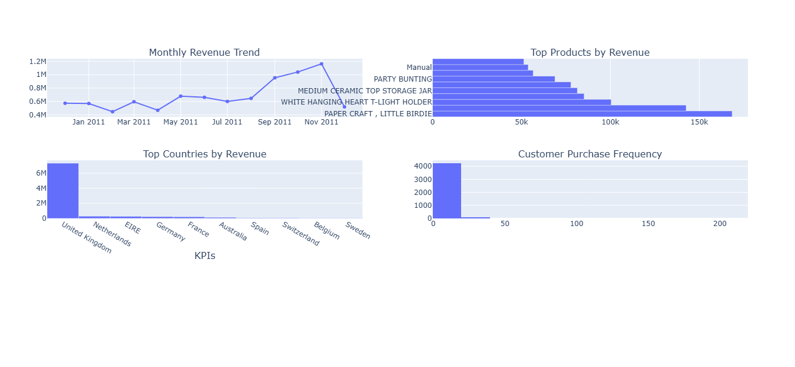

Aspiring Data Analyst | Python | SQL | Power BI | Tableau
I am an enthusiastic Data Analyst with hands-on experience in Python, SQL, Excel, Power BI, and Tableau. I enjoy analyzing datasets, creating visualizations, and deriving actionable insights for business decisions.
Tools: Python, Pandas, Plotly
Built an interactive e-commerce dashboard showing key KPIs, monthly revenue trends, and top-performing products to support data-driven business decisions.
🔗 View Live DashboardTools: Python, Pandas, Seaborn
Performed exploratory data analysis on Tesla stock prices to identify trends and patterns.
📂 GitHub RepositoryTools: Excel, Tableau
Created dashboards and visual reports to track monthly bike sales performance.